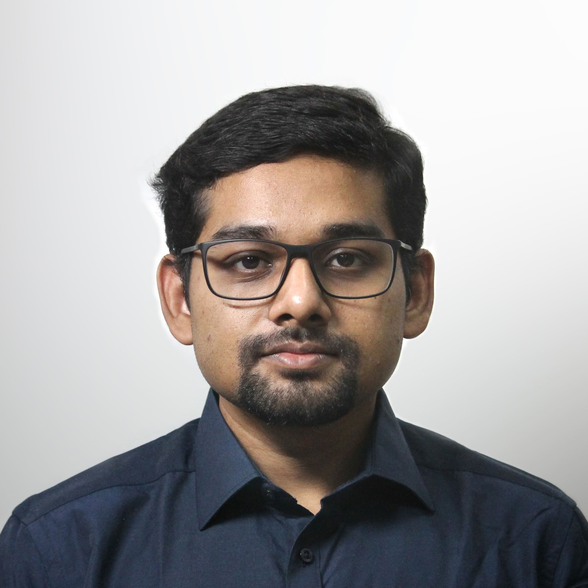
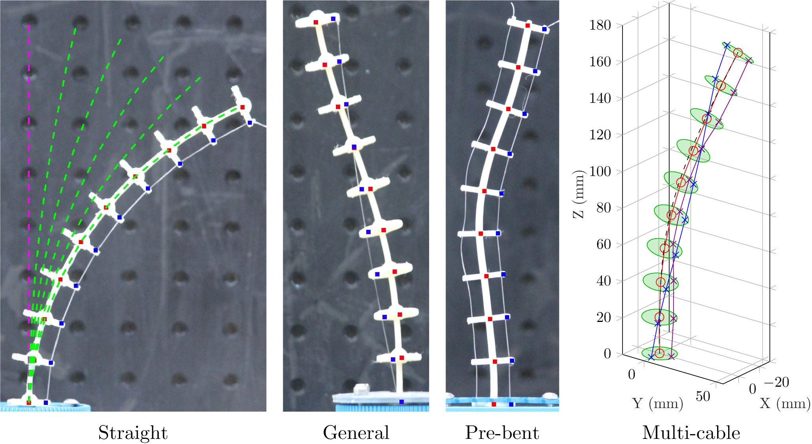
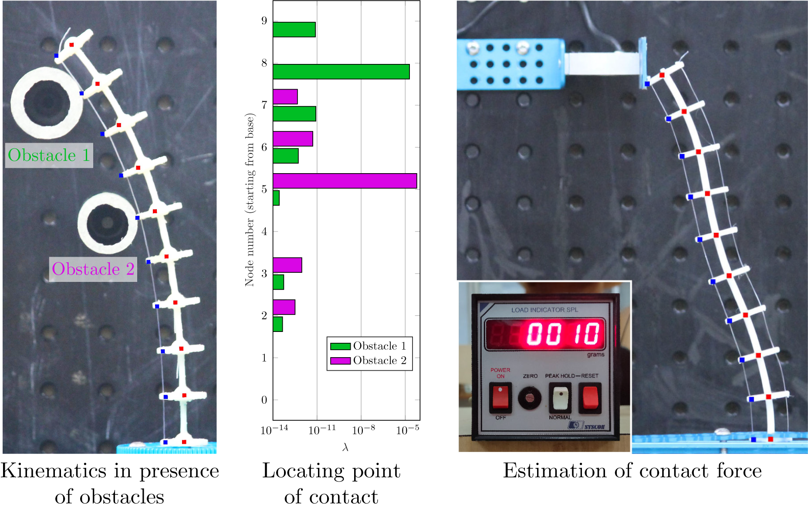
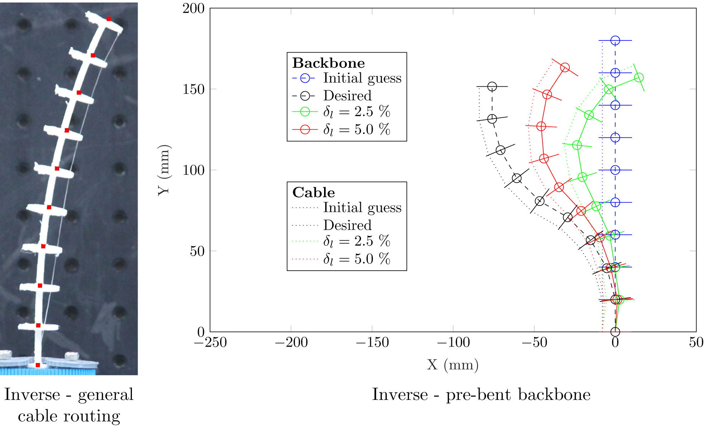
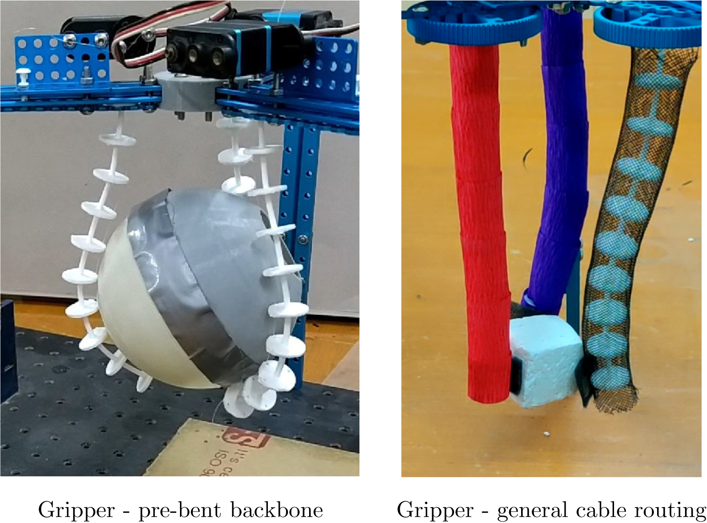
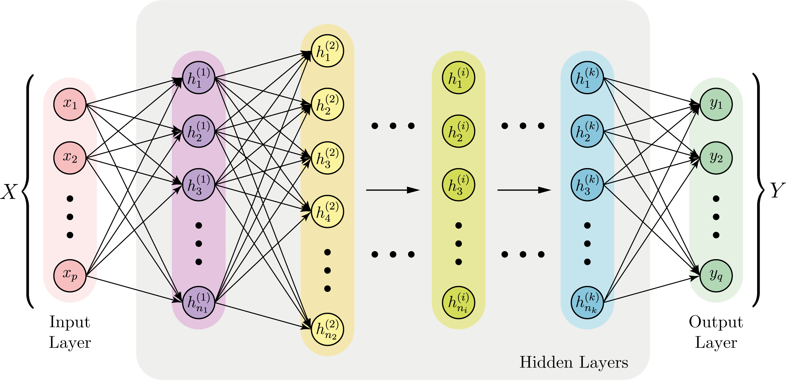
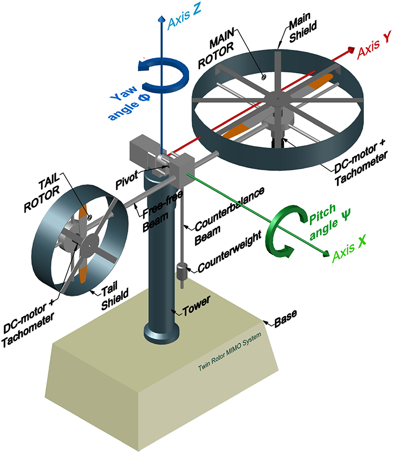
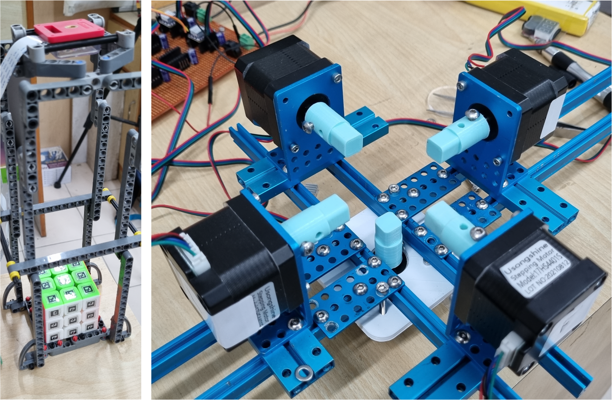
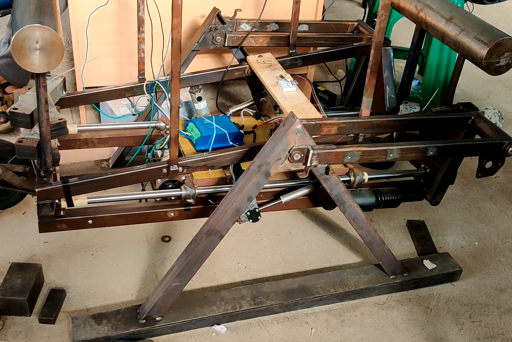
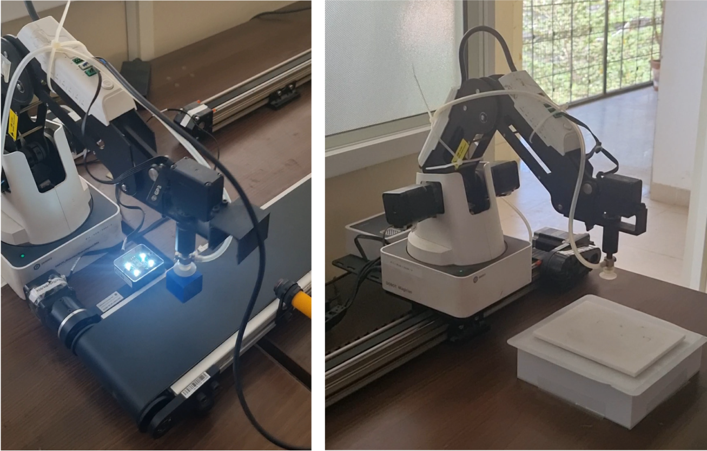

I’m Soumya (pronounced 'shou-mo'), the Lead Robotics Engineer at Cosmoserve Space and a recent Ph.D. graduate from IISc Bangalore. My expertise lies in continuum robotics, spanning kinematics, multi-body dynamics, and machine learning. I am passionate about building next-generation robotic systems for active space debris removal. By leveraging unique soft-capture methodologies that safely adapt to non-cooperative targets, I create advanced models and simulations that seamlessly bridge complex theory with real-world applications, driving scalable solutions for orbital sustainability.

Professional and academic timeline.
Driving the development of next-generation robotic systems to actively remove space debris. My role involves leading the design of advanced capture mechanisms, performing rigorous multi-body dynamic simulations for orbital environments, and integrating soft-robotics principles to ensure safe, reliable interaction with non-cooperative targets in Low Earth Orbit (LEO). I collaborate across technical teams to translate complex kinematic concepts into scalable, flight-ready space infrastructure solutions.
Developed advanced neural network solutions for solving inverse kinematics in diverse configurations of cable-driven continuum robots, bridging robotics and machine learning.
Pioneering research on modeling, simulation, and control of cable-driven continuum robots. Explored kinematics, statics, and machine learning techniques to address complex inverse problems.
Advisor: Prof. Ashitava Ghosal
Specialised in Machine Design; thesis on modeling and control of a Twin Rotor MIMO system using bond graph modeling and Adams–MATLAB co-simulation.
Advisor: Prof. Sanjoy K. Ghoshal
Strong foundation in mechanical engineering, nurturing a passion for robotics and control systems through core coursework and hands-on projects.
Core focus areas in space robotics and continuum mechanisms.
At Cosmoserve Space, my work addresses the critical challenge of orbital sustainability through the development of Active Debris Removal (ADR) technologies. Traditional ADR methods—such as rigid robotic arms, nets, or harpoons—often struggle with tumbling, non-cooperative objects lacking standardized docking interfaces. Rigid arms require extreme precision and can impart dangerous rotational forces upon contact, while nets and harpoons pose high entanglement and secondary fragmentation risks.
Our unique approach leverages the inherent compliance of soft and continuum robotics. By designing capture mechanisms that physically adapt and conform to arbitrary geometries, our technology safely envelops and neutralizes tumbling debris. This "soft-capture" methodology significantly dampens impact forces, eliminates the need for precise grappling fixtures, and drastically reduces the risk of generating secondary space debris during the interception phase. Through rigorous multi-body dynamic simulations and advanced control architectures, we are engineering a safer, more versatile, and highly scalable solution for orbital infrastructure protection.
My academic research explores continuum robotics, inspired by nature's flexible structures like elephant trunks and octopus arms. Unlike rigid robots, continuum robots feature a compliant backbone enabling maneuverability through constrained spaces — ideal for surgery, inspection, and high-safety environments.
I focus on developing robust structural mechanics profiles, handling highly cross-coupled nonlinear math properties, and designing machine learning loss topologies for real-time inverse models.

Developed analytical and geometry-based optimization models to capture CCR behaviour across configurations, enabling precise forward and inverse kinematics solutions and shape control for adaptability in constrained environments.

Extended kinematics/statics models to environments with obstacles using inequality constraints and Lagrange multipliers. A virtual-work method estimates contact forces, validated via 3D-printed CCRs and load cell measurements.

Addresses two inverse problems: finding general cable routing for a desired backbone shape (four-bar model), and identifying pre-bent backbone shape using strain energy minimization — enabling CCR design around obstacles.

Applied continuum robotics inverse modeling to design novel compliant grippers. A three-fingered gripper conforms to object contours for stable grasping; a cable-routed gripper grasps and reorients a cube in 3D, demonstrating precise shape control.

Used feed-forward neural networks (FNNs) to solve CCR inverse kinematics. A reconstruction-based loss function handles multiple inverse solutions. A forward kinematics model integrated into training yielded high predictive accuracy.

Classic control systems problem — the Twin Rotor MIMO system as a helicopter flight model. Derived a dynamic model via bond graph techniques and developed advanced control strategies to achieve stable pitch and yaw control, addressing cross-coupling and nonlinearities.

Academic literature and contributions.
Hardware explorations and side projects.

Designed a vision system using Aruco markers, OpenCV, and Python. Hardware solution used multiple stepper motors controlled via Raspberry Pi with real-time image processing.

Two-wheeled self-balancing delivery robot with a movable battery for dynamic stability, using Arduino, a 3-axis IMU, limit switches, and ultrasonic sensors.

Dual Dobot Magicians with linear rails and conveyor belts demonstrating coordinated robotic manipulation for efficient color-coded object sorting.
Technical stack and academic coursework.
NPTEL: 2021–2025 | IISc: 2021–2022
NPTEL: 2022–2025 | IISc: 2021